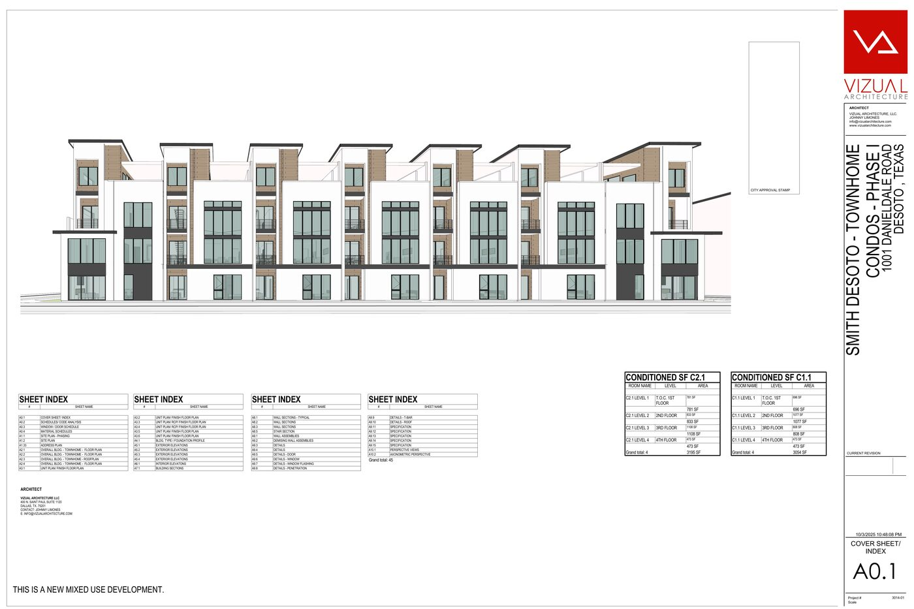
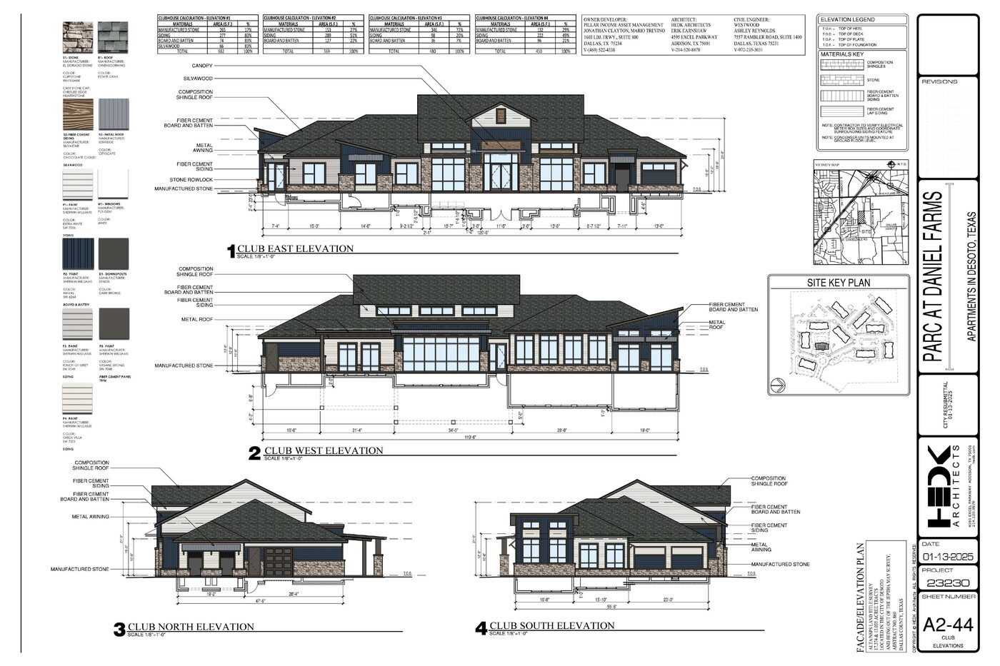

The Family Property · Updated May 2026
1400 Bolton Boone Dr, DeSoto TX
We own about 55 acres here. It's listed for sale, the city is buying a small 4-acre piece for a water tower, and several big projects nearby are making the area — and our land — more valuable. Here's where things stand.
The Land at a Glance
~51 acres remaining
4 ac
Total land we own
Per county records (DCAD)
55.1 ac
Pending sale → City of DeSoto
4-acre water tower piece · City Council votes Aug 18 to approve tower + price
−4 ac
~$1.04M
Remaining — still for sale
Listed · Destination Mixed-Use zoning
~51 ac
est. $285K+/ac
What's New
May 2026
🚧 The road out front is moving forward
Danieldale Rd is being widened to 4 lanes, with a new traffic light planned right at our corner. Construction is expected to begin this spring — a real boost to how usable and valuable our frontage is.
🏙 Two major nearby projects added
We added RedBird (a $160M+ redevelopment ~3 miles north) and University Hills (a 270-acre community by D.R. Horton + Lennar ~5 miles east) to the map. Both show the whole area is growing fast.
🏗 Neighboring developments still on track
The apartment and townhome projects next door are still working through city approvals (no construction yet). We corrected a few builder names and prices during this refresh.
🛣 We identified the Westmoreland corner
The SW corner is the Creeks of Homestead neighborhood (homes by Bloomfield), part of the same special taxing district that's funding the Danieldale road widening. The city can't finish the road's design until the last right-of-way there is finalized (early 2026). We checked the strip-center idea — it reads as residential, with no public retail filing at that corner yet.
Want more detail on anything above? Tap Updates for the full change log, or Projects to see each development on the map.
Subject Property
1400 Bolton Boone Dr
DeSoto, TX 75115 · Family-owned · For Sale
55.1
Acres (DCAD)
Listed
For Sale
Dest. MU
FLUM Designation
$285K+
Est. $/Acre
🏗 Deal Pending
Water Tower Sale
4 acres of inland land — 150 ft back from Danieldale Rd, east side of property (no road frontage) — agreed for sale to City of DeSoto for a municipal water tower.
$6.00/sqft · $285,120/acre
~$1.04M gross
★ Council vote Aug 18 on tower + price
Closing targeted before year-end
Adjacent Developments
Red Sea — Smith Legacy
1001 W. Danieldale Rd · 9.86 ac · NW corner of intersection
Entitled
▼
Luxury mixed-use community at the St. Stephen Community Church property — directly at the NW corner of Danieldale Rd & Bolton Boone Dr, your land's primary intersection. Originally rezoned MU-1 in May 2025 but a staff error meant MU-1 doesn't permit townhomes, triggering a corrective MU-R rezoning approved Dec 2025.
Townhomes
44 units · 4-story · ~50 ft
MF Building
66-unit mixed use
Office/Retail
35,000 SF (4 levels + roof)
Restaurant
5,000 SF + rooftop terrace
Phase 1
10 townhomes (Danieldale frontage)
Parking
33,600 SF structured garage
Architectural Plans & Elevations

Cover sheet with rendered townhome facade — 4-story modern design, Danieldale Road frontage (Vizual Architecture, Oct 2025)
Entitlement History
Apr 8, 2025 — P&Z recommended MU-1 rezoning
May 6, 2025 — City Council approved MU-1
Nov 2025 — Site plan submitted; staff found MU-1 blocks townhomes
Dec 9, 2025 — P&Z unanimously approved corrective MU-R (Z-1543-25)
Jan 6, 2026 — City Council met; case not reflected in the public recap
As of May 2026 — Council outcome still unconfirmed
May 6, 2025 — City Council approved MU-1
Nov 2025 — Site plan submitted; staff found MU-1 blocks townhomes
Dec 9, 2025 — P&Z unanimously approved corrective MU-R (Z-1543-25)
Jan 6, 2026 — City Council met; case not reflected in the public recap
As of May 2026 — Council outcome still unconfirmed
Key Parties
Developer: Herschel Smith / Smith Legacy Development
Owner: St. Stephen Community Church, Inc.
Architect: Vizual Architecture LLC (Johnny Limones, Dallas)
Civil: Eyncon Engineering, Ennis TX
Owner: St. Stephen Community Church, Inc.
Architect: Vizual Architecture LLC (Johnny Limones, Dallas)
Civil: Eyncon Engineering, Ennis TX
MU-R ZoningZ-1543-25At Bolton Boone IntersectionNo Construction Permits Yet
P&Z Dec 9, 2025 · Council vote unconfirmed (May 2026)
P&Z Meeting ↗
Parc at Daniel Farms
9100 Bolton Boone Dr · 82.19 acres · PD-121
Approved
▼
Large-scale garden-style multifamily spanning 82 acres northwest of the intersection. The May 2025 amendment updated building elevations (gables → hip roofs, brick → fiber cement + accent stone, enlarged clubhouse), revised parking, and adjusted landscaping. Owned by Pillar Income Asset Management (Dallas). The PD-121 amendment was re-recommended for approval in late 2025 and is moving toward construction, but still no construction permits as of May 2026.
Total Site
82.19 acres
Phase 1
17.4 acres
Clubhouse
6,491 SF (enlarged)
Amenities
Pool, playground, BBQ
Vote
7-0 unanimous
Zoning
PD-121
Architectural Plans & Elevations

Clubhouse elevations (all 4 sides) — composition shingle roof, fiber cement board & batten, manufactured stone accents (HEDK Architects, Jan 2025)
Exterior Design (Updated May 2025)
Roofline changed gables → hip roofs with shed roofs at entry towers. Dormers removed. Brick replaced with fiber cement horizontal/vertical siding. Accent stone at balconies and entry towers. Updated window style and color scheme.
Key Parties
Owner: Pillar Income Asset Management (Jonathan Clayton, 1603 LBJ Frwy Suite 800, Dallas)
Architect: HEDK Architects (Erik Earnshaw, Addison TX)
Civil Engineer: Westwood Professional Services (Ashley Reynolds, Dallas)
Architect: HEDK Architects (Erik Earnshaw, Addison TX)
Civil Engineer: Westwood Professional Services (Ashley Reynolds, Dallas)
PD-121Multifamily7-0 ApprovedNo Construction Permits Yet
Approved May 6, 2025
Council Meeting ↗
Homestead at Daniel Farms
Thorntree area · Bloomfield Homes · Active Sales
Active Sales
▼
Master-planned single-family community by Bloomfield Homes on the Danieldale corridor (near Thorntree Golf Club). Actively selling with rising price points — proving buyer demand for residential product in this area. Adjacent to your land's broader submarket.
Builder
Bloomfield Homes
Type
Master-planned SF
Phase 1
From $405,990
Phase 2
From $466,990
Size
~1,500–4,400+ SF
Status
Actively selling
Why This Matters
Active SF absorption from ~$406K (Phase 1) to ~$467K+ (Phase 2) proves DeSoto buyers exist at price points that support developer economics. An actively selling community — not distressed. D.R. Horton and Lennar are also active in Southern Dallas County at similar price points.
Bloomfield HomesActively SellingSF Demand Signal
Active sales · Thorntree / Danieldale corridor
Infrastructure
Danieldale Rd Widening
Westmoreland Rd → Duncanville city limit
Pre-Construction
▼
Full corridor expansion along Danieldale — the road forming your land's southern boundary. Per the city's CIP Update deck + Projects-Status page (July 2026), design is 98% complete and right-of-way is essentially secured (status page: all ROW acquired; CIP deck: one final parcel closing out). Design completes Aug 2026, franchise utility relocations run Oct 2026 – Mar 2027, construction bid Spring 2027, and construction April 2027 → April 2029. Funding: $23M estimated cost with $17.5M available (incl. $6.7M from Dallas County). A new traffic signal specifically at Bolton Boone Drive is included — turning your corner into a signalized intersection.
Lanes
4 concrete (raised median)
Key Signal
★ NEW at Bolton Boone Dr
Design
98% · complete Aug 2026
Utility Relocations
Oct 2026 – Mar 2027
Construction
Apr 2027 → Apr 2029
Funding
$17.5M of $23M est. cost
Why This Matters for Your Land
A new traffic signal at Bolton Boone converts your parcel's corner from an uncontrolled T-intersection to a signalized corner — a major step-up in commercial and residential viability. Four-lane Danieldale with upsized utilities substantially improves developer infrastructure assumptions. The seller window between "design complete" and "road open" is historically optimal.
CIP Infrastructure$48.55M Bond-FundedDeSoto + Duncanville
Design 98% · construction Apr 2027 → Apr 2029 · CIP update Jul 2026
Tribune Article ↗
Regional Context — Major Nearby Developments
RedBird (The Shops at RedBird)
Camp Wisdom Rd & US-67 · ~3 mi N
Regional Anchor
▼
Peter Brodsky's redevelopment of the former Red Bird Mall into a live-work-play district. The ownership group controls ~78–100 acres and has invested $160M+ across phases — medical, retail, office, hospitality and residential. A grocery (Sprouts) opened in 2025 and the next phase was teased in Oct 2025. ~3 mi north — proof that Southern Dallas County mixed-use demand is real and deepening.
Developer
Peter Brodsky
Size
~78–100 acres
Uses
Retail · Medical · Office · MF
Distance
~3 mi N of subject
Status
Operating + expanding
Next Phase
Teased Oct 2025
Why This Matters
RedBird is the marquee evidence that institutional and retail capital will commit to Southern Dallas County, supporting the same demand thesis underpinning the Bolton Boone/Danieldale corridor.
Regional AnchorMixed-Use~100 Acres
Ongoing · Phase expansion
Bisnow ↗
University Hills
By UNT Dallas · ~270 ac · ~5 mi E
Under Construction
▼
270-acre master-planned community next to UNT Dallas, by Hoque Global. Broke ground May 2025. Plan: ~1,500 apartments, hundreds of single-family homes (D.R. Horton + Lennar bought ~580 lots), ~1.5M SF of commercial space and 50+ acres of open space; first residents expected ~2026. The largest nearby greenfield mixed-use project — validating regional demand from the same buyer pool you'd target.
Developer
Hoque Global
Builders
D.R. Horton + Lennar
Size
~270 acres
Homes
$300K–$500K
Commercial
~1.5M SF
Broke Ground
May 2025
Why This Matters
University Hills shows national builders (D.R. Horton, Lennar) actively buying lots at scale in Southern Dallas County — exactly the buyer profile most likely to pursue a master-planned program on the subject site.
Master-Planned270 AcresDR Horton + Lennar
Groundbreaking May 2025
Dallas Express ↗
Thorntree Golf Club
825 W. Wintergreen Rd · 157 ac · ~0.7 mi S
City-Backed Revitalization
▼
157-acre golf club the City of DeSoto bought for $2.7M (Council approved 6–1, June 17, 2025) and is now partnering with private developers to revitalize. On March 3, 2026 the Council authorized an MOU; in April 2026 a signing ceremony was held with SM Partners and Samyang Company to develop, operate, and invest in the property. Vision: restore the course and reimagine it as a recreation/tourism destination supporting reinvestment in the surrounding area — tied to the city's "Mapping DeSoto's Future 2035" plan. Sits just south of your land (south of Danieldale, between Bolton Boone Dr and N. Westmoreland Rd) in the same submarket.
Size
157 acres
City Purchase
$2.7M · Jun 2025
Partners
SM Partners + Samyang
MOU Signed
April 2026
Use
Golf · Recreation · Tourism
Distance
~1 mi N of subject
Why This Matters
A city-backed, privately-funded revitalization of a 157-acre asset in your immediate area is a strong neighborhood-value signal — it raises desirability and shows DeSoto is steering reinvestment into this pocket of the city. Specific buildings/uses are still being negotiated in the MOU phase (no housing/commercial component confirmed yet).
157 AcresCity-OwnedMOU April 2026
MOU signing · April 2026
City of DeSoto ↗
CITY COUNCIL
Final authority on zoning & development
Rachel Proctor
Mayor
Until 2027
Crystal Chisholm
Mayor Pro Tem
Stable
Andre Byrd
Place 4
Pro-Dev ★ · Vacating
Pierette Parker
Place 2
Election May 2 ⚠
Brian Wesley
Place 4 Candidate
Election May 2 ⚠
David Edgerson
Place 4 Candidate
Election May 2 ⚠
↓
P&Z COMMISSION
Reviews & recommends on rezoning — council has final say
Dewberry
Chair
Alexis
Commissioner
Edwards
Commissioner
Leroy
Commissioner
Laura
Commissioner
M. Jones
New · Dec 2025
↓
Rezoning Process
1
Applicant submits to city planning staff
2
P&Z public hearing + recommendation vote
3
City Council final vote — if P&Z denied, supermajority required
Pricing Scenarios — 55 Acres
Low
$75K–
$100K
$100K
per acre
$4.1M–$5.5M total
BASE CASE
Mid
$125K–
$175K
$175K
per acre
$6.9M–$9.6M total
High
$200K–
$275K
$275K
per acre
$11M–$15.1M total
Low Scenario · $75K–$100K/ac
▼
Who buys at this price? Value-add land speculator or SF subdivision builder with no confidence in MF entitlement. Treats the site as raw/unentitled — ignores FLUM.
Comparable anchor
• 62.7-ac South Dallas raw land (2025): $47,847/ac — true raw floor
• 721 Rayburn Dr, DeSoto (23 ac, unentitled): $64,539/ac
• 91.7-ac Lancaster Ag tract (near I-35E): $87,148/ac
Apply 60–100% FLUM premium to raw floor → $76K–$96K/ac
Risk factors driving low price
• DFW MF vacancy 12.0% in Q4 2025; rent growth -1.8% YoY
• Buyer doubts DeSoto will approve full MU PD
• Road widening not yet in construction
• 55-acre bulk limits buyer pool
Comparable anchor
• 62.7-ac South Dallas raw land (2025): $47,847/ac — true raw floor
• 721 Rayburn Dr, DeSoto (23 ac, unentitled): $64,539/ac
• 91.7-ac Lancaster Ag tract (near I-35E): $87,148/ac
Apply 60–100% FLUM premium to raw floor → $76K–$96K/ac
Risk factors driving low price
• DFW MF vacancy 12.0% in Q4 2025; rent growth -1.8% YoY
• Buyer doubts DeSoto will approve full MU PD
• Road widening not yet in construction
• 55-acre bulk limits buyer pool
Mid Scenario · $125K–$175K/ac ★ Most Likely
▼
Who buys at this price? Mixed-use or garden MF developer who recognizes the FLUM designation + adjacent approvals as meaningful entitlement de-risking. Plans 200–350 MF units + townhomes.
Key economics at $150K/ac
• Land cost/MF unit (18 units/ac): ~$8,333/unit
• DFW market average land cost/unit: $24,943/unit (Valbridge 2024)
• Subject land cost is 67% below DFW average — very attractive for a developer
• Implies total land cost of ~$8.25M at 55 acres
Comparable anchors
• 501 W Wintergreen, DeSoto (17 ac, ex-MF-18): $150,725/ac
• 1601 Old Hickory Trl, DeSoto (9.6 ac): $187,110/ac
• 1407 S Uhl Rd, DeSoto (7.9 ac): $156,642/ac
• Lancaster 27-ac residential dev: $121,742/ac
• LandSearch DeSoto avg (all types): ~$150K/ac
Key economics at $150K/ac
• Land cost/MF unit (18 units/ac): ~$8,333/unit
• DFW market average land cost/unit: $24,943/unit (Valbridge 2024)
• Subject land cost is 67% below DFW average — very attractive for a developer
• Implies total land cost of ~$8.25M at 55 acres
Comparable anchors
• 501 W Wintergreen, DeSoto (17 ac, ex-MF-18): $150,725/ac
• 1601 Old Hickory Trl, DeSoto (9.6 ac): $187,110/ac
• 1407 S Uhl Rd, DeSoto (7.9 ac): $156,642/ac
• Lancaster 27-ac residential dev: $121,742/ac
• LandSearch DeSoto avg (all types): ~$150K/ac
High Scenario · $200K–$275K/ac
▼
Who buys at this price? Well-capitalized MF/mixed-use developer paying for "last large parcel" scarcity + entitlement certainty. Even at $250K/ac, land cost/unit ($13,889) is 44% below DFW average.
What has to be true
• Competitive bidding process (2+ qualified buyers)
• MF construction financing loosens
• Road widening reaches construction phase
• Buyer plans 350–450 units + retail pads — full Dest. MU build-out
Comparable anchors
• Lancaster Loop 9 (30 ac, I-35 frontage): $217,799/ac
• 1112 W Belt Line, DeSoto (6 ac, commercial): $225,551/ac
• Lancaster 110-ac I-35/I-45 corridor: $261,360/ac
• Signalized hard corner premium: +$15K–$40K/ac vs. comparable non-signalized
What has to be true
• Competitive bidding process (2+ qualified buyers)
• MF construction financing loosens
• Road widening reaches construction phase
• Buyer plans 350–450 units + retail pads — full Dest. MU build-out
Comparable anchors
• Lancaster Loop 9 (30 ac, I-35 frontage): $217,799/ac
• 1112 W Belt Line, DeSoto (6 ac, commercial): $225,551/ac
• Lancaster 110-ac I-35/I-45 corridor: $261,360/ac
• Signalized hard corner premium: +$15K–$40K/ac vs. comparable non-signalized
Land Comps — Click to Locate on Map
Tap any comp to fly the map to that location
1000 W. Wintergreen Rd, DeSoto
$82K/ac ⚠
48.6 ac · $3.999M · Under contract · Estate/ranch
Distressed — no MU zoning, no entitlement · Sets raw floor · 1.5 mi N
501 W. Wintergreen Rd, DeSoto
$151K/ac
17.25 ac · $2.6M · SF-9 (ex-MF-18 zoning) · Active
Best direct size comp · Former MF zoning · ~1.5 mi N
1000 E. Danieldale Rd, DeSoto
$469K/ac
4.97 ac · $2.33M · Retail zoning · Listed Aug 2025
Same road — small-parcel retail premium; not apples-to-apples
Lancaster Loop 9 (I-35 frontage)
$218K/ac
30.2 ac · $6.57M · Commercial/I-35 · Active
High end anchor — major interstate frontage; sets ceiling context
South Dallas Raw Land (Simpson Stuart)
$48K/ac
62.7 ac · $3M · 2025 closed sale · Kennedy Funding
Only confirmed closed comp · Raw, unentitled · True floor
Entitlement Premium Breakdown
Raw unentitled land (floor)$48K–$75K/ac
+ Dest. MU FLUM designation+50–100%
+ Adjacent approved projects (Parc, Red Sea)+$15K–$25K/ac
+ Signalized hard corner (Bolton Boone signal)+$15K–$40K/ac
− 55-acre bulk discount−$20K–$40K/ac
Indicated value range$125K–$175K/ac
Land Cost / MF Unit Benchmark
DFW market avg land cost/unit$24,943
Subject at $100K/ac (18 units/ac)$5,556/unit ✓
Subject at $150K/ac (18 units/ac)$8,333/unit ✓
Subject at $250K/ac (18 units/ac)$13,889/unit ✓
Even at the high case, land cost is 44% below DFW average — strong economics for any garden MF developer. Source: Valbridge Property Advisors 2024.
Highest & Best Use
1
Multifamily — Garden / BTR
Adjacent PD-121 · Dest. MU FLUM · 300–500 units feasible · $8,333/unit land cost at mid price
2
Master-Planned SF / Townhome
Bloomfield/D.R. Horton profile · $406K–$733K homes active on Danieldale · 150–250 lots implied
3
Mixed-Use (MF + Retail Pads)
Consistent with FLUM · Retail viability improves after Danieldale widening opens
Likely Buyer Profile
Garden MF / BTR Developer
HIGH FIT
Pillar Income Asset Mgmt profile (Parc neighbor) · Needs 300–500 units · Land economics very favorable
Regional Homebuilder
HIGH FIT
Bloomfield, D.R. Horton, M/I, Lennar active in Southern Dallas County · Danieldale corridor proven by Homestead at Daniel Farms ($406K–$733K)
Townhome / Mixed-Use Dev
MED-HIGH
Smith Legacy (Red Sea) profile · Smaller capital stack · Would likely phase the site
Industrial / Commercial
LOW FIT
FLUM and adjacent residential approvals make industrial unlikely · City steering away from warehouse uses
Key Caveats
⚠ No CoStar closed-transaction data available publicly. All DeSoto comps are active listings — buyers can negotiate below asking. A licensed MAI appraisal using CoStar/MLS closed data should be obtained before finalizing any pricing decision.
• FLUM ≠ actual zoning — full PD rezoning still required (~12–24 month process)
• 55-acre bulk limits buyer pool vs. 5–15 acre parcels
• DFW MF headwinds: 12% vacancy Q4 2025, -1.8% rent growth YoY
• Road widening in design; ROW acquisitions still ongoing as of Feb 2025
• FLUM ≠ actual zoning — full PD rezoning still required (~12–24 month process)
• 55-acre bulk limits buyer pool vs. 5–15 acre parcels
• DFW MF headwinds: 12% vacancy Q4 2025, -1.8% rent growth YoY
• Road widening in design; ROW acquisitions still ongoing as of Feb 2025
Recent Updates
Last refreshed: May 2026
May 30, 2026 — Full Refresh
Westmoreland × Danieldale — SW corner identified
Researched
The SW corner (west of Westmoreland, south of Danieldale) is Creeks of Homestead — a ~54-lot single-family development by Wildwood Development (principal Steven Uetrecht), homes by Bloomfield Homes, inside the Danieldale Homestead PID (created by city resolution Nov 27, 2019). The corridor's improvements and right-of-way are delivered through that developer PID (~$47.55M authorized; first bonds $6.55M, Jan 2023) — separate from, and alongside, the city's $48.55M CIP bond that also helps fund the Danieldale widening. Per the City's July 2026 CIP update, design is ~98% done and the ROW logjam has essentially cleared (all needed ROW acquired per the status page; one final parcel closing out per the CIP deck — design completion targeted August 2026). It reads as residential, not a strip center: no public city filing for retail at that exact corner was found. The commercial-sounding PID landowners — DeSoto Professional Park, LLC and Danieldale 35e Ltd — map to the east-side Centre Park / E. Danieldale office-industrial cluster, not this corner. Record PID landowners: Homestead at Daniel Farms Ltd · Danieldale Property LP · DeSoto Professional Park LLC · Bloomfield Homes LP · 726 LLC. (DCAD blocks automated lookups; a parcel-click at the literal corner would confirm which entity holds the raw corner lot.)
Homestead at Daniel Farms
Corrected
Builder corrected from “M/I Homes” to Bloomfield Homes. Pricing updated: Phase 1 from $405,990, Phase 2 from $466,990 (was listed ~$389K). Still actively selling — not sold out.
Affordable Housing (Elerson / Hampton)
Corrected
City of DeSoto publicly clarified it has not endorsed either project — 121 S. Elerson has no Resolution of Support, and on 911 N. Hampton the City “did not provide a favorable answer.” TDHCA 9% awards aren’t decided until the July 2026 board.
Danieldale Rd Widening
Updated
Per the City’s CIP Update deck + Projects-Status page (July 2026): design is 98% complete, ROW is essentially secured (one final parcel closing out), design completes Aug 2026. Utility relocations Oct 2026 – Mar 2027, bid Spring 2027, construction Apr 2027 → Apr 2029. Funding: $17.5M available of $23M estimate (incl. $6.7M Dallas County). Bolton Boone signal still in scope.
Red Sea (Z-1543-25)
Verified
City Council met Jan 6, 2026, but the case is absent from the published meeting recap. Final vote outcome still unconfirmed from the primary record as of May 2026.
Parc at Daniel Farms (PD-121)
Verified
Amendment re-recommended in late 2025 and moving toward construction, but still no construction permits or groundbreaking found in the public record. No fourth ZVL or sale found at 2400 Bolton Boone since Feb 2, 2026.
Regional Context Added
New
Added two major nearby developments as map pins: RedBird (Peter Brodsky’s ~100-ac redevelopment, ~3 mi N) and University Hills (270-ac master-planned community by UNT Dallas — D.R. Horton + Lennar, ~5 mi E).
Note: most DeSoto primary-source pages block automated access. Items marked “Verified” were re-checked but couldn’t be confirmed as advanced, so they’re flagged rather than assumed.
What Gets Tracked on Each Refresh
Red Sea (Z-1543-25)
Jan 2026 council vote confirmation · Site plan approval · Permit filings · Construction start
Parc at Daniel Farms (PD-121)
Construction permits · Groundbreaking date · Financing announcements
Danieldale Rd Widening
Construction start · Bolton Boone signal install · Completion timeline
ZVL Activity (2400 Bolton Boone)
New ZVL filings · PIA request response · Buyer identity
Land Comps & Pricing
New DeSoto / Southern Dallas land transactions · Price per acre movements
DeSoto City Actions
New rezoning cases · P&Z agenda items · Council votes affecting the corridor
To request a refresh: Message Claude and say "run a full update on the DeSoto map." All tracked items above will be re-researched and any changes reflected on this page.
Entitled
A property that has received government approval (zoning, permits) to be developed for a specific use. Reduces risk for buyers — less regulatory uncertainty.
FLUM — Future Land Use Map
City's official plan showing intended future use of land. Not legally binding zoning, but a strong signal of what will be approved. Subject parcel: Destination Mixed Use.
MU-R — Mixed Use Residential
DeSoto zoning designation allowing townhomes, multifamily, and ground-floor retail. The correct zone for the Red Sea project (required corrective rezoning from MU-1).
MU-1 — Mixed Use 1
Similar to MU-R but does NOT permit townhomes — why Red Sea needed a corrective rezoning in Dec 2025.
PD — Planned Development
Custom zoning district negotiated with the city for a specific project, specifying uses, densities, and design standards. Parc at Daniel Farms = PD-121.
P&Z — Planning & Zoning Commission
City board that reviews and recommends on rezoning applications before City Council vote. Approval here is required before council can act.
ZVL — Zoning Verification Letter
Formal written confirmation from city of current zoning and permitted uses. Almost always filed by buyers or lenders during due diligence — a strong deal signal.
HBU — Highest & Best Use
The legally permissible, physically possible, financially feasible, and maximally productive use of a property. The gold standard for land valuation.
DCAD — Dallas Central Appraisal District
The county office that tracks property ownership, assessed values, and dimensions for tax purposes. Used to verify parcel boundaries and acreage.
BTR — Build-to-Rent
Residential development (often SF or townhomes) built specifically to be rented rather than sold. A major buyer category for land like this.
CIP — Capital Improvement Program
City's multi-year plan for infrastructure spending. The Danieldale widening is CIP-funded, meaning it's already budgeted and bonded — not just proposed.
Map Legend
★ Subject Property (1400 Bolton Boone)
R — Red Sea Townhomes (1001 Danieldale)
P — Parc at Daniel Farms (9100 Bolton Boone)
H — Homestead at Daniel Farms
Z — ZVL Buyer DD (2400 Bolton Boone)
Danieldale Rd Widening corridor
🏗 Water Tower — City Deal Pending
B — RedBird (Camp Wisdom & US-67, ~3 mi N)
U — University Hills (UNT Dallas, ~5 mi E)
T — Thorntree Golf Club (157 ac, ~0.7 mi S)
◆ Land sale comps